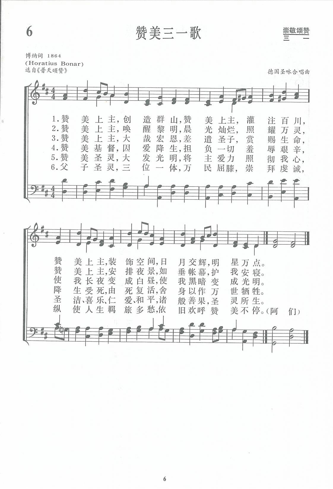
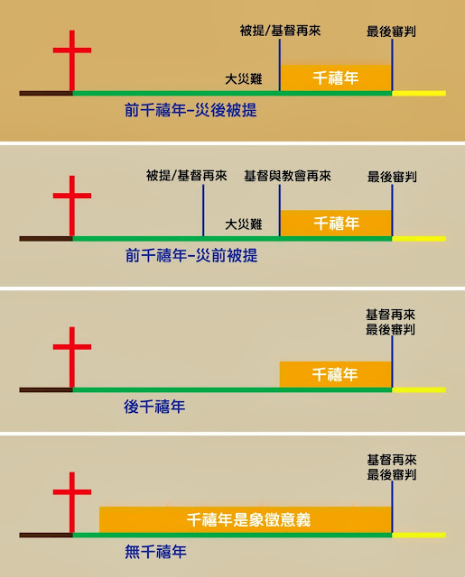

|
|
|
|
1 All praise to Him Who built the hills;
All praise to Him the streams Who fills;
All praise to Him Who lights each star
That sparkles in the sky afar.
2 All praise to Him Who wakes the morn,
And bids it glow with beams new-born;
Who draws the shadows of the night,
Like curtains, o'er our wearied sight.
3 All praise to Him Whose love hath given,
In Christ His Son, the life of heaven;
Who gives us, for our darkness, light,
And turns to day our deepest night.
4 All praise to Him in love Who came,
To bear our woe, and sin, and shame;
Who lived to die, Who died to rise,
The all-prevailing the sacrifice.
5 All praise to Him Who sheds abroad
Within our hearts the love of God:
The Spirit of all truth and peace,
The fount of joy and holiness.
6 To Father, Son, and Spirit now
Our hands we lift, our knees we bow:
To Thee, blest Trinity, we raise
E'en here, in exile, songs of praise.
The Hymnal: revised and enlarged as adopted by the General Convention of
the Protestant Episcopal Church in the United States of America in the year
of our Lord 1892
|
《赞美三一歌》
1.赞美上主 创造群山
赞美上主 灌注百川
赞美上主 装饰空间
日月交辉 明星万点
2.赞美上主 唤醒黎明
晨光灿烂 照耀万灵
赞美上主 安排夜景
如垂帐幕 护我安寝
3.赞美上主 大哉宏恩
差遣圣子 赏赐生命
使我长夜变成白昼
使我黑暗变成光明
4.赞美基督 因爱降生
担负一切羞辱艰辛
降生受死 由死复活
舍身以作万世牺牲
5.赞美圣灵 大发光明
将主爱力照彻我心
圣洁喜乐仁爱和平
诸般善果 圣灵所生
6.父子圣灵 三位一体
万民屈膝 崇拜虔诚
纵使人生羁旅多愁
依旧欢呼赞美不停
阿们
https://www.zanmeishige.com/song/16880.html |
|
https://www.zanmeishige.com/tab/13637.html?songbook=1&index=6

All Praise to Him Who Built the Hills
 |
|
|
|

-
All Praise To Him Who Built The Hills - Historic Christian Hymn / Spiritual
Song Lyrics with Orchestral backing music.
-
|
Short Name: |
Horatius Bonar |
|
Full Name: |
Bonar, Horatius, 1808-1889 |
|
Birth Year: |
1808 |
|
Death Year: |
1889 |
Horatius Bonar

was born at Edinburgh, in
1808. His education was obtained at the High School, and the University of
his native city. He was ordained to the ministry, in 1837, and since then
has been pastor at Kelso. In 1843, he joined the Free Church of Scotland.
His reputation as a religious writer was first gained on the publication of
the "Kelso Tracts," of which he was the author. He has also written many
other prose works, some of which have had a very large circulation. Nor is
he less favorably known as a religious poet and hymn-writer. The three
series of "Hymns of Faith and Hope," have passed through several editions.
--Annotations of the Hymnal, Charles Hutchins, M.A. 1872
Tune Information
|
Title: |
GAULT |
|
Composer: |
Samuel W. Beazley |
|
Meter: |
8.8.8.8 |
|
Incipit: |
51534 55556 67712 |
|
Key: |
C
Major |
|
Copyright: |
Public Domain |
|
Short Name: |
Samuel W. Beazley |
|
Full Name: |
Beazley, Samuel W., 1873-1944 |
|
Birth Year: |
1873 |
|
Death Year: |
1944 |
Samuel W. Beazley
was born in Sparta,
Virginia in 1873. He was a music scholar and taught music at Shenandoah
College for five years. He composed over 4,000 gospel songs during his
lifetime. Samuel W. Beazley maintained a successful publishing business in
Chicago, Illinois. He died in Chicago on September 16, 1944. He was inducted
into the Gospel Music Hall of Fame in 1992.
NN, Hymnary editor.
Source: www.gmahalloffame.org
经文：“诸天述说神的荣耀，穹苍传扬他的手段”(诗19：1)。
《赞美三一歌》是一首名副其实的赞美三一真神的圣诗。
头两节赞美上帝的创造奇功；
第三、四节赞美基督的救赎妙爱；
第五节赞美圣灵感化众生的伟大工作；
最后一节赞美三一妙身。
作者博纳博士(H．Bonar,1808-1889)是苏格兰长老会中最有名并且影响最大的牧师。他出生于爱丁堡，在大学时随当代长老会神学大师多马．查默斯(1750-1847)学习，毕业后任苏格兰教会(即长老会，苏格兰国教)的牧师。1843年追随其师以及一部分教牧人员脱离国教，另行组织成立自由长老会。查默斯去世后，他受聘为爱丁堡查默斯纪念堂的首任牧师，并继承查默斯接任苏格兰自由长老会全国大会会长。他一生事主敬虔，努力工作，牧养群羊，素有勤祷告、勤写作、勤讲道的“三勤”牧师之称。
他所写的圣诗为数颇多，著有《旷野之歌》(1843-1844年)、《圣经圣诗》(1845年)两本诗集。当时通用的有一百多首。但受千禧年前派①思想的影响，在他的部分圣诗中表现出悲观厌世、忧伤难过的情调，限制了它的广泛流传。
《新编》中除这首《赞美三一歌》外，还有第29
首《享受平安歌》也是博纳所作。
曲调是来自德国“圣咏合唱曲”，又称“众赞歌(Choral)”②，原名为《FESTUS》。
“众赞歌”源于马丁．路德。在马丁．路德的抗议宗教会出现前，教会中的歌唱如经文曲、启应对唱曲、弥撒，都是由教堂中的神职人员和唱诗班来唱。但马丁．路德让来教会礼拜的信徒都参加了歌唱，因而有了“赞美诗(Hymn)”。根据教会中过去使用过的一些曲调，从马丁．路德开始，教会又创作了另一种形式的赞美诗，就是“众赞歌”。如果我们将此两种形式加以区分的话，那么“赞美诗”算作主调音乐或将一些单声部音乐配以和声，这就是直到今日全世界各地新教教会中信徒所唱的歌曲；“众赞歌”的曲调有的来自拉丁赞美诗、世俗歌曲、教会通用歌曲和一些创作的歌曲，成为多声部、对位化的乐曲。
“赞美诗”可用四部和声来唱，但其重点在于旋律；而“众赞歌”虽然也能只唱旋律与处理“赞美诗”一样，但其重点则偏重于和声。尤其是后来由巴赫、哈斯勒等人写作的“众赞歌”，已成为18世纪西方音乐的基础。如果没有马丁．路德创建的“众赞歌”，可以说西方的音乐史中就没有巴赫、贝多芬以及华尔特、许慈、勃拉姆斯。从一定的意义来讲，没有“众赞歌”，就没有今日的西方音乐；从宗教方面来说，这种歌曲表达了人类心灵的需要和活泼、热炽的信仰，也带给崇拜者来祭坛前祈求神圣的感情。
这首诗的曲调活跃，和声变化色彩丰富；与前面五首赞美诗的和声处理方面很不同，是一首典型的“众赞歌”。
①
千禧年前派：基督教神学末世论学说之一，与千禧年后派相对。认为基督将于千禧年之前复临世界，千年太平盛世即将因他的复临而建立。千年之中，由基督亲自作王。千年期满后，即为世界末日，所有灵魂皆受审。
③ Choral：为“合唱”意，如作为形容词，则读作“柯乐尔”(重音在‘柯’)。我们通常在圣诞节、复活节举行的音乐(合唱)礼拜，可称为Choral
Service，Choral
Symphony可译作合唱交响曲。如作名词用，则读作“柯拉尔”，(重音在‘拉’)，亦拼作Chorale，指合唱赞美诗。《新编》中译作“圣咏合唱曲”。实际上是从《德国合唱诗集(German
Choral)》选来。我国又将Choral译作“众赞歌”。《新编》内88、97、327等首也都是圣咏合唱曲，可参阅。
https://www.xueshengshi.com/?p=5121
All praise to God, the Father of our Lord Jesus Christ. It is by
his great mercy that we have been born again, because God raised Jesus Christ
from the dead. Now we live with great expectation, and we have a priceless
inheritance —an inheritance that is kept in heaven for you, pure and undefiled,
beyond the reach of change and decay. ~ 1 Peter 1:3-4 (NLT)
Hymn Story
At the time of his death in 1889, Dr. Horatius Bonar was a well-known and
well-loved composer of hymns and poems, having penned more than 600 in his
lifetime. In the 1907 revision of his invaluable Dictionary of Hymnology, Dr.
John Julian reported that more than 100 of Bonar's hymns were in common use in
both America and the UK. His writing was notable for his ability to combine a
rich grasp of theology, beautiful lyricism, and emotional sensitivity in a way
few of his contemporaries could match.*
https://www.youtube.com/watch?v=LARRgrsA8lo&feature=emb_rel_pause
Yet today, his hymns are absent from virtually every recent hymnal (a notable
exception being Hymns of Grace which contains four of his texts, including two
recent retunings), and he is most well-known as the author of What A Friend We
Have in Jesus... a hymn he did not actually write, but which was falsely
attributed to him in several hymnals published in the late 19th century. (The
hymn was actually composed by Joseph Scriven.)
So how did such a gifted writer go so quickly from fame to obscurity? I believe
it is because most of his hymn texts were paired with sub-par melodies unable to
survive the intervening century. To have staying power, a song—whether a sacred
or secular composition—must have both strong lyrics and a strong melody, with
the latter being arguably more influential. Keith Getty has put it this way:
"What we actually need is beautiful poetry that lifts our eyes to the God of the
universe, that arrests our emotions, fascinates our minds, and sticks in our
memories, and this poetry ought to be married to melodies that are so sing-able,
they captivate us and all those around us—so much so that we want to sing them
over and over and pass them on to our children."
Thankfully, great lyrics from the past can be resurrected through a process
called retuning hymns. Bonar's hymn All Praise to Him Who Built the Hills is a
great example of this, in this new musical setting by Bob Kauflin and Matt
Merker (who also recently retuned a hymn composed by Dr. Bonar's wife):
Lyrics
All praise to Him, the God of Light,
Who formed the mountains by His might;
All praise to Him who names the stars
That sing His fame in skies afar.
All praise to Him who reigns in love,
Who guides the galaxies above,
Yet bends to hear our every prayer
With sovereign pow'r and tender care
All praise to Him whose love is seen
In Christ the Son, the Servant King,
Who left behind His glorious throne
To pay the ransom for His own.
All praise to Him who humbly came
To bear our sorrow, sin, and shame.
Who lived to die, Who died to rise;
The all-sufficient sacrifice.
All praise to Him whose pow'r imparts
The love of God within our hearts;
The Spirit of all truth and peace,
The fount of joy and holiness.
To Father, Son, and Spirit now
Our souls we lift, our wills we bow
To You, the Triune God we raise
With loving hearts our song of praise.
Hymn Study
Charles Spurgeon wrote:
"The proper study of God's elect is God; the proper study of a Christian is the
Godhead. The highest science, the loftiest speculation, the mightiest
philosophy, which can ever engage the attention of a child of God, is the name,
the nature, the person, the work, the points, and the existence of the Great God
whom he calls Father."
By that metric alone, this is a great hymn. There is a lot packed into these
three short stanzas! The unique name, nature, and work of each Person of the
Godhead is highlighted as we sing, with the closing lines emphasizing the unity
that exists within the Trinity.
Notice as well that each stanza provides both a description of what God does and
a specific reason why we should praise Him. The Father is the sovereign,
almighty ruler over all creation, "yet bends to hear our every prayer." The Son
is the worthy King who from eternity past has occupied the throne of heaven, yet
He condescended "to bear our sorrow, sin, and shame" as "the all-sufficient
sacrifice." The Spirit possesses the full power of God, and is able to do
whatever He pleases, yet He "imparts the love of God within our hearts" and is
for us "the fount of joy and holiness."
There is much devotional value in these lines, and I encourage you to meditate
on these lyrics as you study and sing this hymn with your family!
* I love Julian's description of Bonar's writing and wanted to quote it in its
entirety here:
Dr. Bonar's scholarship is thorough and extensive; and his poems display the
grace of style and wealth of allusion which are the fruit of ripe culture.
Affected very slightly by current literary moods, still less by the influence of
other religious poetry, they reveal extreme susceptibility to the emotional
power which the phases of natural and of spiritual life exercise; the phases of
natural life being recognised chiefly as conveying and fashioning spiritual
life, used chiefly for depicting spiritual life... As a result of this
susceptibility, and from habitual contemplation of the Second Advent as the era
of this world's true bliss, his hymns and poems are distinguished by a tone of
pensive reflection, which some might call pessimism. But they are more than the
record of emotion; another element is supplied by his intellectual and personal
grasp of Divine truth, these truths particularly:—The gift of a Substitute, our
Blessed Saviour; Divine grace, righteous, yet free and universal in offer; the
duty of immediate reliance upon the privilege of immediate assurance through
that grace; communion with God, especially in the Lord's Supper, respecting
which he insists on the privilege of cherishing the highest conceptions which
Scripture warrants; and finally, the Second Advent of our Lord: by his vigorous
celebration of these and other truths as the source and strength of spiritual
life, his hymns are protected from the blight of unhealthy, sentimental
introspection. To sum up: Dr. Bonar's hymns satisfy the fastidious by their
instinctive good taste; they mirror the life of Christ in the soul, partially,
perhaps, but with vivid accuracy; they win the heart by their tone of tender
sympathy; they sing the truth of God in ringing notes... a singularly large
number have been stamped with approval, both in literary circles and by the
Church.
https://fbchurch.org/resource/hymnology-all-praise-to-him
“All Praise to Him”
The Father has never been without His Son,
or without His Holy Spirit. For They are all
three co-eternal and co-essential. There is
neither first nor last; for They are all
three one, in truth, in power, in goodness,
and in mercy. – Belgic Confession excerpt
(Article 8)
It is so important for us to know and to
understand the subject of God as the ‘Trinity’.
It is crucial for us to have a right
understanding of who God is, and how this
affects every aspect of the life of a believer.
The study and meditating on the Triune God is a
lifelong pursuit, but the depth of riches that
await are immeasurable.
As Spurgeon once said:
The proper study of God’s elect is God; the
proper study of a Christian is the Godhead.
The highest science, the loftiest
speculation, the mightiest philosophy, which
can ever engage the attention of a child of
God, is the name, the nature, the person,
the work, the points, and the existence of
the Great God whom he calls Father. – The
Immutability of God, A sermon by
Charles H. Spurgeon
To understand the Trinity is to understand the
true nature and character of our God. To
understand Him as He reveals himself to us is to
understand how to worship Him rightly. Get this
wrong, and we get all of Christianity wrong.
For the whole Christian life, from the
outset, is lived in the light of the fact
that we have been baptized ‘in the name of
the Father and of the Son and of the Holy
Spirit.’ To be a Christian is, first and
foremost, to belong to the triune God and to
be named for Him…To become a Christian
believer is to be brought into a reality far
grander than anything we could ever have
imagined. It means communion with the triune
God. – Sinclair Ferguson, The Trinitarian
Devotion of John Owen, Pgs. 27-28
We are most grateful for hymn writers that
compose music and lyrics to help us remember and
rehearse the deep truths of the Godhead –
Father, Son and Holy Spirit. One such hymn is All
Praise to Him by Matt Merker
and Bob Kauflin, with original words by Horatius
Bonar. Taken from Bonar’s All
Praise to Him Who Built the Hills, this
obscure hymn was rewritten with a new tune and
lyrics that describe the Triune nature of God
and His distinct roles in the work of salvation
in the life of every believer.
Verse 1 – The Father
God is described as the God of light who created
and reigns sovereignly over all, yet he tenderly
‘bends to hear our every prayer’. (Genesis
1:1-25; Psalm
98:7-9; Psalm
113:4-9; Isaiah
40:25-31)
Verse 2 – The Son
Christ the Son, leaves His glorious throne to
die for our sins – the all sufficient sacrifice.
(Isaiah
53:4-6; Mark
10:45; Philippians
2:5-11; Hebrews
2:17; 1
John 2:2)
Verse 3 – The Spirit
We have been given the word of truth by the
power of the Holy Spirit’s work in our hearts.
We rejoice in this promise. (Romans
5:3-5; Romans
15:13; Ephesians
1:3-14 ; 1
Thessalonians 1:5)
In the final stanza, we
respond with a doxology of praise to the Triune
God – Father, Son, and Spirit – ‘we raise with
loving hearts our song of praise’!
All praise to Him, the God of light,
Who formed the mountains by His might.
All praise to Him who names the stars,
that sing His fame in skies afar.
All praise to Him who reigns in love,
Who guides the galaxies above,
yet bends to hear our every prayer,
with sovereign power and tender care.
All praise to Him Whose love is seen
in Christ the Son, the servant King,
Who left behind His glorious throne
to pay the ransom for His own.
All praise to Him Who humbly came
to bear our sorrow, sin, and shame,
Who lived to die, Who died to rise,
the all sufficient sacrifice.
All praise to Him whose power imparts
the love of God within our hearts.
The Spirit of all truth and peace,
the fount of joy and holiness.
To Father, Son, and Spirit now
our souls we lift, our wills we bow.
To You, the Triune God, we raise
with loving hearts our song of praise.
Based on the hymn, “All Praise to Him Who
Built the Hills” by Horatius Bonar
(1808-1889). Music and additional words:
Matt Merker & Bob Kauflin © 2017 Sovereign
Grace Praise
https://trinitybiblechurch.org/hymn-story-all-praise-to-him/
千禧年四觀
徐四浪
本書資料:柯樓士編，李經寰譯 台灣華神出版 1985年初版
「千禧年四觀」一書主要是針對四個對「末世論」不同見解的派別之討論，這四個觀點分別為：1. 歷史的千禧年前派2. 時代派的千禧年前派3. 千禧年後派4.
無千禧年派。因為這四派的神學與教義的論點與釋經學有著密切的關係，所以因著不同的釋經原則，故解釋相同的經文時卻會產生不同的結果。因此我們可以說這一切的問題是出在「解經」的問題上。
按著聖經神學與教義來說，解經的結論就是神學與教義的理論根據。但是若按神學學派的思想來說，通常是先有某一神學思想體系作為解經的前提，然後才引用有關經文來支持其神學理論。今日許多宗派的教義也是用這種方式，先有了宗派的教義，後引用有關的經文來支持其教義。這種的解經法是：如果經文的字面可以支持其神學與教義，就用字面解經，但如果字面意義不能支持他們的神學與教義，就用寓意或靈意解釋。雖然在理論上他們反對用寓意解經，但為了支持其理論，還是採用寓意解經法。所以若以神學與教義為前提來解經，或以正當的解經法來得正確的神學與教義，這是決定末世論是否台乎聖經本意很重要的關鍵。
因此，在本書的結構安排中，作者先是介紹一個派別的主要觀點，並其經文的根據，然後再由其他的不同派別作回應。這樣安排的好處是：免於某一派的主觀解經。我發現無論是哪一派都的確有令人信服的經文基礎，但是當別人指出他的錯誤來時也是有其理由的，因此讀者較易陷入一種情形就是無所適從。為這個令人頭痛的辯論，我體會到一些現象：
第一、光是找出支持自己觀點的經文是不夠的，因為解經的方法會導致不同結果，所以他的解經原則必須要「一貫」，字義與寓意在解經的運用上，應該是要一致的。
第二、避免各說各話，我認為任何一派都有必要參考別人對經文的解釋，若發現別人對經文處理的態度比我嚴謹更不會自相矛盾時，就應該接受自己的錯誤，不應該強解或強辯。
第三、接受自己的有限。事實上沒有一個人能發展出一套涵括完整又無懈可擊的末世理論，我們應該從中盡力去避免更大的錯誤。
從解經的立場來看，每一派各有其解經特色。就如歷史的千禧年前派，這派相信基督是在千禧年前再來，在神學教義上他們與千禧年前派一樣，但他們的解經法是以歷史的亮光來解釋主再來的預言和預兆，即以新約的應驗來解釋舊約的預言。那位感動舊約先知寫預言的聖靈，在新約時就啟示使徒來解釋那預言預兆的意思。這是用現在已應驗的事實來解釋過去的預言，並用現在已應驗的解經原則，去解釋尚未應驗的預言或預兆。他們用新約基督生平的亮光來解釋舊約對彌賽亞的預言或預表，多數是按字面來解釋。由於歷史千禧年前派是按著歷史上已應驗的事實來解釋先知的預言，所以本派根據希伯來書八章8-12節，對耶利米書三十一章31-34節的解釋，認為新約的教會就是舊約的以色列民，而教會時期就是千禧年國度。
第二種的時代派的千禧年前派，這一派對舊約關於國度、猶太人及基督為王掌權的預言是用：字面意義、文法、特別注意時間性作為解釋的原則。他們接神創造宇宙的六日，在第七日神安息了，解釋為人類在地上的歷史是七千年。千禧年是基督在地上與信徒建立國度，共同掌權，以結束罪惡動亂、背叛上帝的世界。這國度的首都就是錫安，以色列民族將要全家得救。他們的解經方法是字義解經，因為他們認為聖經的文字是起初接受信息之人所用的一般語言，舊約用希伯來文，新約用當時羅馬帝國通行的希臘文。這樣神給百姓的信息，不必經過先知、教師、神學家、或牧師，一般屬神的人都可以明白聖經的含意。
所以聖經中歷史性的內容、教義性的經文、道德教義的教導，甚至預言性的內容，都要按字面意義來解釋，即使聖經中有一些象徵性的字句，也要按當時人所能容易明白的字面意義來解釋。該派以聖經原文無誤論為根據，而解釋神在歷史中的啟示是逐進的，是有嚴密的系統的，不但著重過去的歷史，也著重於今日實際生活的教訓，並引進未來完美的國度。雖然如此，但實際上此派也並非那麼堅持字面意義和文法解經。他們常常在不能自圓其說時，就用他們所反對的寓意解經法，來支持他們的理論，所以在解經的原則上就缺乏前後一貫。此派相信聖經完全沒有錯誤，熱愛聖經、忠於聖經的態度是我們要學習的，但他們錯用解經法，不按聖經本意的解經所做出的教義，是有待商榷的。
而第三種的千禧年後派觀點所主張的末世觀認為，藉著福音廣傳和聖靈在人心施行拯救的工作，神的國在今日已得拓展，至終全世界要基督化，引進一段長時期公義、和平的日子，即所謂千禧年，且在此結束時，基督就要再來。緊隨基督再來就是所有人都要復活、受審、進入天堂或下到地獄。因此，千禧年在我們後派的眼中，是指在這一世代，即教會時期裡會有的一段屬靈復興的黃金期。這要藉著今日世上不斷的努力來實現，並要延長到某一時間，甚或超過字面一千年也說不定。而它種種改善的特質可從人類的社會、經濟、政治、文化生活的提高反映出來。屆時，大部份世人都能沈浸在公義的景況。
在解經方面此派相信聖經絕對無誤，是神的啟示，有至上的權威。但他們認為聖經是用人間文字來表達，所以有文學的因素，要注意文章的體裁、文字的運用，其中有許多是比喻、寓意、象徵，如果單用字義，則不免違背原作者用詞的本意。後派人士也用字義解經，但他們不單用字義解經，更按聖經經文的體裁和用詞來決定用什麼解經法。因此若遇凡屬非物質的屬靈真理，雖然用物質的名詞，那只是借喻而已。但我們會思考一個問題：如果因為用物質名詞，一定按字義或文法來解釋，而忽略經文屬靈的本意，那不是解釋聖經的屬靈教訓和啟示。就如耶穌第一次來世既不是完全照字面應驗，有不少是照寓意或靈意應驗，那麼耶穌第二次的再來，當然也不能照字面意義來解釋，而要按那段經文的含意和用辭來解釋。
特別關於啟示錄二十章節千禧年的經文，如照字面意義實在不能解釋。無底坑若照字面，既然「無底」，如何使用「鑰匙」鎖著，那鍊子未免太長了？那條「大鍊子」是銅的或鐵的？魔鬼是靈界的，不受物質界的限制，即使銅或鋼的鍊子也不能鍊著靈界的撒但。「一千年」是數字上的一千年麼？如果是，從甚麼時候開始，其時間如何計算？這裡只提一千年，沒有提到「國度」，為什麼說是一千年國度。這不是不忠於字面解經法麼？也許可以辯論，與基督一同作王，這不是國度麼？但若把作王解釋為國度，這是寓意解經，而不是字面解經。
因此我們可以看出千禧年後派與前派的主要分別，不是在於基督在千禧年「之前」與「之後」再來的分別，乃是對國度的特性與掌權的方式的不同觀點。後派相信：藉著傳福音，信徒增加，基督教的信仰成為世人生活的標準，教會的存在對人民的日常道德生活產生影響，神的國度將在地上彰顯出來。這種的千禧年國度，因基督的再來、死人復活、最後的審判而宣告結束，所以千禧年是屬靈的國度。所以根據他們的解經方法來看，其實此派也並非有一致的釋經原則。
另外一種稱為無千禧年派，此派認為用「千禧年實現派」更能表達其意義。此派並不是否認千禧年的教義，乃是對千禧年的看法與其他千禧年派的看法不同，他們認為啟示錄二十章論到的千禧年絕不是只發生在未來，而是現今已逐步實現了。從解經原則來看，無千派的解經法，是字義、文法與靈意並用。不過什麼經文要用字義，甚麼經文要用靈意，常常與前派不同。無千派根據經文的本意採用文字與靈意並用的解經法，所以對末世論他們認為神的國度一面藉教會在地上實現，一面仍屬於未來，即基督再來時才完全實現。信徒在基督裡面，就是在國度裡面，但我們仍等待基督再來，完全實現國度的顯露。
這日期何時實現，無人知道，所以要及時準備，為國度的實現而計劃，努力。在解經方面，無千派在解經法的運用上，比前派與後派較充實，他們除了文法、字義、靈意、象徵、寓意之外，還注意到經文的體裁，特別啟示錄是漸近平行體裁。這種解經是將本意解明，就不會將解經者的意見加入聖經裡去。但對聖經教義的統一，神的國度是屬靈的、不受時間的限制一事，仍然不清楚。他們不少的見解是為了與前派、後派的理論不同而已。
綜合以上四派的觀點，的確使我明瞭問題真是出在解經上，因到目前為止尚未有一派的理論可以完全被接受。所以討論這四派的觀點之後我的體會是不要太堅持唯有自己才是對的，對具爭論性的問題應該有所保留，尊重與我不同的觀點，如此才有繼續對話與成長的可能，因為低估別人的證據，及高估自己的證據都是不智的，無論如何我們都得承認在神的面前我們都是很無知的。
https://cueric.tripod.com/article/newpage81.htm
http://www.pcchong.com/mydictionary1/eschatology/historic%20premillennialism.htm
“歷史性”前千禧年派(Historic
Premillennialism

http://huangchunsheng-biblestudy.blogspot.com/2013/07/blog-post.html